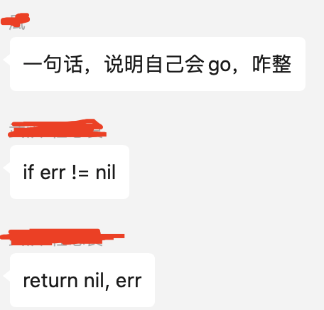
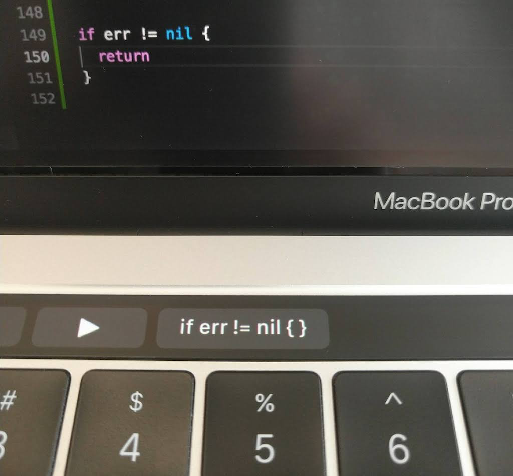

被黑惨了：一句话，说明自己会 Go，咋整？
大家好，我是 polarisxu。
今天在「Go语言中文网」微信群里有网友问了这么一个问题：一句话，说明自己会 go，咋整？一个哥们立马给出了一个回复，竟然无法反驳，感觉 Go 被黑的很惨？！（被黑的最惨的一次？！！）

关于 if err != nil 的调侃真的不要太多。这里列举几个：
1）之前发过一篇文章：写了50万行Go代码是一种什么样的体验？
，有人留言调侃说：有 10 万行是 if err != nil。。。
2）VSCode 有一个插件，配合 Mac 的 touch bar 可以一键生成 if err != nil，地址：https://github.com/dongri/touch-bar-if-err

3）GoLand 编辑器也支持快捷键生成 if err != nil
关于错误处理的问题确实是 Go 争议最多的，也有大量的文章讨论相关的问题，包括各种推荐的做法。在 Go 语言提案中，也有这种各样的错误处理提案。看几个：
- simplify error handling with try err == nil {} except {} ，目前这个提案被否了；
- try-catch by assignment ，还是想要回到传统的 try catch，目测大概率会被否；
- error handling with error receiver function ，增加了 or 关键字；
- 。。。

因为 error 大改影响挺大的，目前相关的提案都收录在了这个 issue 中：https://github.com/golang/go/issues/33892 ，这里包含了各种放在 go2 处理的 issue，有兴趣的可以了解。
一句话，说明自己会 Go，咋整？你会如何回答，欢迎留言交流！